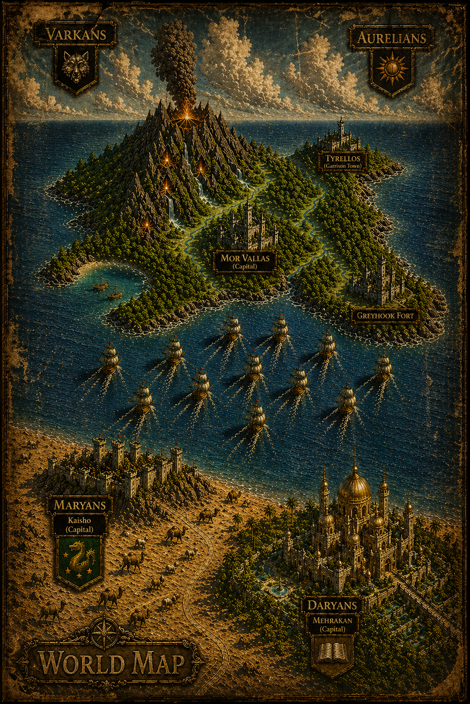

Book One of The Caldera Throne
THE STILL AND THE BURNING
The island has survived by controlling what its people are allowed to remember.
For thirty years, the volcanic kingdom of Aurelia has lived between two dangers: the mountain above it and the sea that cuts it off from the mainland. Its capital, Mor Vallas, rules through law, record, ritual, and carefully preserved versions of the past. The official prophecy has been shortened. The older verses have been buried. The dead are named only when power permits them to be named. A royal history has been shaped into law, and a throne has been protected by silence.
But the sea has gone still.
No tide. No current. No wind. Dead fish wash ashore. The mountain begins to breathe differently. In the markets, old women remember lines the priests stopped speaking. In the crags, the Varkans read the same signs as a debt coming due.
Adrian, a royal-blooded blacksmith in the coastal town of Tyrellos, has spent years trying to live outside the palace story. He chose the forge over court, work over inheritance, iron over the poisoned theater of court. He wants no throne, no banner, no followers. Only honest labor and the right to remain useful without becoming owned.
Then a market fight changes everything.
When Adrian, Greger the baker, and Tomas the butcher defend a young woman from violence, the law does not reward them. It chains them. The crowd sees courage; the crown sees disorder. Adrian is offered freedom because of his blood and refuses to leave his friends behind. That choice travels faster than any official order. By the time the palace hears of it, Adrian is no longer merely a smith. He has become a story the court cannot control.
King Aurelius understands the danger of stories. Old, tired, and surrounded by advisers who measure survival differently, he knows Aurelia rests on foundations already cracking: altered prophecy, Varkan raids, failing supplies, a treasury under strain, and a prince who believes obedience is the same as legitimacy. Marcus is clever, wounded, hungry to be seen, and increasingly willing to mistake performance for rule. Under the careful hand of Ashbourne, he learns that power can be staged, recorded, repeated, and made to look inevitable.
At Greyhook, the southern fortress above a dead sea, Adrian is meant to serve out a punishment. Instead, he finds a wall full of weaknesses, soldiers surviving on habit, and a war already moving through hinges, locks, patrol gaps, ledgers, food stores, and the unseen routes men use when they intend to break a kingdom quietly. When the Varkans strike, Adrian holds the wall not as a prince, but as a man who understands pressure: where it gathers, where it breaks, and what must be reinforced before collapse begins.
The Varkans are not a distant superstition. They are organized, patient, and brutal when needed. In the volcanic crags, old kings and ambitious brothers weigh prophecy against hunger, vengeance against strategy. They do not only raid villages. They attack certainty. Grain, boats, records, patrol patterns, and fear become weapons. Their control of the Corridor — the narrow throat between lowland and mountain — turns geography into power, and every movement through it carries a cost.
As raids spread and the island’s shortages deepen, Adrian is drawn from exile into command. He does not claim authority; others begin to rely on him because he sees the structure of danger before anyone else names it. Greger turns jokes into movement, distraction, and survival. Tomas brings the hard discipline of a man who knows exactly what protection costs. Together, they become something the palace cannot easily define: not rebels, not loyalists, not soldiers of a crown — but men acting where the official system has failed.
Then King Aurelius is murdered.
Before grief can become truth, Marcus turns the night into an official account. Bodies become evidence only when they serve the new king. Witnesses disappear into silence. Records are sealed, altered, or redirected. Helena, colder and sharper than the court understands, begins separating what is real from what can be proved. Livia risks everything to place the right key in the right hand. Varyn measures loyalty against the law it once served. And Marcus, crowned before the kingdom can breathe, learns how quickly fear can be made administrative.
Food becomes leverage. Movement becomes permission. Procedure becomes a blade.
By the time the suppressed prophecy begins spreading beyond palace control, Aurelia is no longer arguing over superstition. It is arguing over legitimacy. The mountain did not promise rescue. The old words were never safe. What the palace removed from the prophecy may be exactly what the island most needed to remember.
War gathers without waiting for declaration: palace against crag, crown against record, hunger against obedience, memory against the version stamped into law. Marcus still holds Mor Vallas, but the kingdom beyond its gates is no longer certain he holds them. Adrian has become a problem no prison can fully contain. The Corridor has become the throat of the coming war.
And far across the sea, the wound Aurelia buried in its records has not healed. Thirty years after the fleet that struck the island’s volcanic shore vanished into disaster, the silence beyond the water begins to answer.
A fleet appears on the horizon.
The island does not yet understand what is coming.
Word Count: 115,000 words
Rights & Enquiries